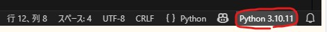
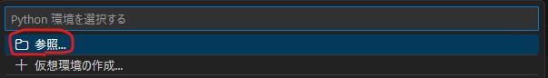
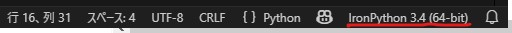
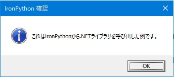

18th January 2026 at 11:40pm
IronPythonのスクリプトファイルをVisual Studio Codeで実行する方法です。2026年1月版です。
しばらく最新のVisual Studio Codeで動作しなくなっていましたが（当時はこちらの方法）、また動作するようになってました。
私の環境では、3系で以下のバージョンで動作することを確認しました。（2026年1月）
- Visual Studio Code
- 1.107.1
- 拡張機能「Python プラグイン」
- 2026.0.0
(1) Pythonインタープリターを設定する
まず、拡張機能「Python extension for Visual Studio Code（ms-python.python）」は入れておいてください。
ステータスバーの右側をクリックする。

[参照]を押すとファイル選択ダイアログが開くので、ipy.exe（もしくは、ipy.bat）を選択します。

うまくいくと、ステータスバーの右側は以下のように表示されます。

(2) 試してみます
以下のスクリプトを実行してみてください。
import clr
# .NETの標準的なWindows Formsアセンブリをロードします
clr.AddReference("System.Windows.Forms")
clr.AddReference("System.Drawing")
# .NETのネームスペースからクラスをインポートします
from System.Windows.Forms import MessageBox, MessageBoxButtons, MessageBoxIcon
from System.Drawing import Point
def show_message_sample():
"""
.NETのMessageBoxを使用してダイアログを表示するサンプル
"""
TITLE_TEXT = "IronPython 確認"
MESSAGE_TEXT = "これはIronPythonから.NETライブラリを呼び出した例です。"
# 戻り値の型も.NETのDialogResult型になります
result = MessageBox.Show(
MESSAGE_TEXT,
TITLE_TEXT,
MessageBoxButtons.OK,
MessageBoxIcon.Information
)
return result
if __name__ == "__main__":
show_message_sample()通常のPythonより時間はかかりますが、うまくいけば下のようなダイアログが表示されます。

最新のVisual Studio Codeでのデバッガーでは、Python3.9以降に対応しているので上記のやり方では実行しかできません。（2026/01）